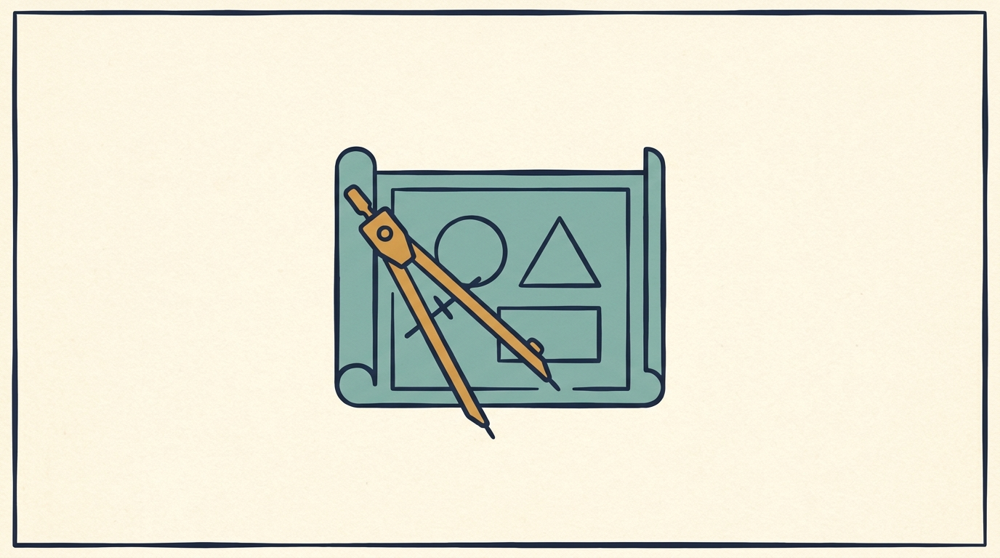

Part III — Turning Investor Expectations Into Commitments
Turn “We Expect Growth” Into a Design Decision

Image generated by Google Gemini (gemini-3-pro-image-preview)
Part III — Turning Investor Expectations Into Commitments

Image generated by Google Gemini (gemini-3-pro-image-preview)